Toolbar
The main toolbar provides quick access to frequently used actions.
- Run Graph Execution: ( ) Evaluates the entire graph and then executes any final 'action' nodes (e.g., file exports).
- Undo/Redo: ( /
 ) Standard undo/redo actions (
) Standard undo/redo actions (Ctrl+Z/Ctrl+Y). - Grid Snap: ( ) Toggle snapping nodes to the grid (
Ctrl+X). - Grid Visibility: (  ) Show/hide the background grid (
X). - Connection Style: (
 ) Toggle between Bezier (default) and Linear connection lines (
) Toggle between Bezier (default) and Linear connection lines (Ctrl+B). - Node Corners: ( ) Toggle between Rounded (default) and Square node corners (
Ctrl+R). - Toggle Panels: Icons for showing/hiding:
- Node Editor ()
- Output Window ()
- Visualizer ()
- Keyframe Sequencer ()
A separate toolbar for the AI Graph Builder appears at the bottom of the main window when enabled.
(Managed by ToolbarManager)